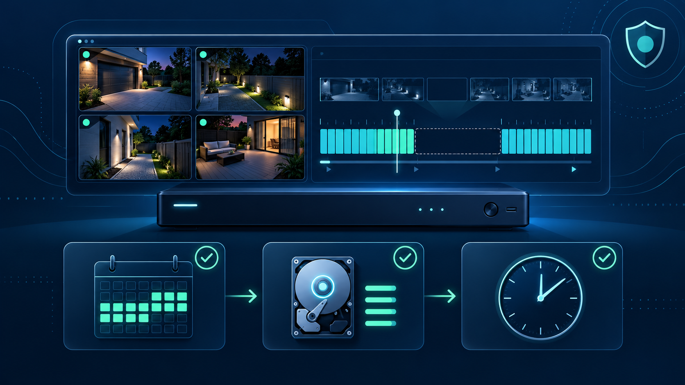
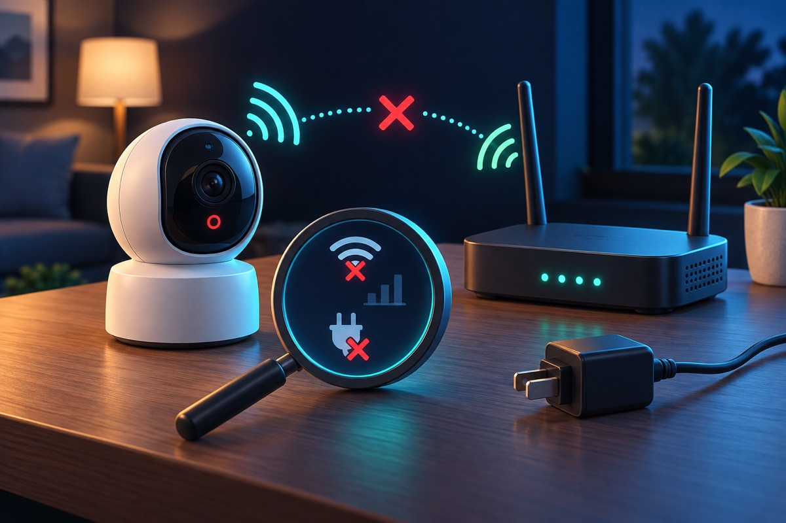
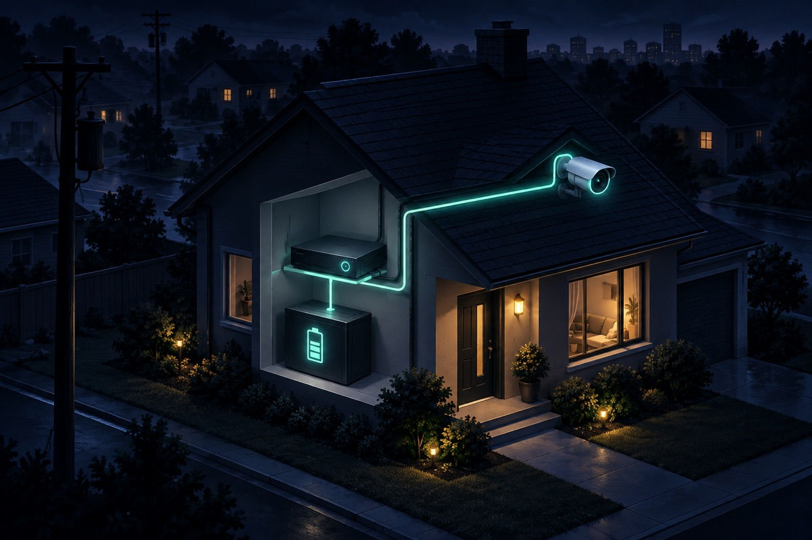

Seeing a live camera picture does not prove that your DVR or NVR is saving video. Live view only confirms that the recorder can display the camera at that moment. Playback depends on a second chain of settings and hardware: the recording mode, schedule, recorder clock, camera connection, and storage drive.
If footage may matter after a theft, accident, or other incident, preserve what you have before changing settings. Export the relevant clip if playback still works. Do not initialize, format, replace, or factory-reset the recorder or drive until you understand what those actions will erase.
Open playback on the recorder itself if possible, then test a recent time for more than one camera. Write down the first and last times footage is available. This quickly separates several different faults:
Make sure the date, time, time zone, and daylight-saving settings shown by the recorder are correct. A wrong clock can place footage under an unexpected date. Search around the recorder's displayed time before assuming nothing was saved.
Correcting the clock can affect how future recordings are indexed, so note the current setting first. If an incident clip might exist, export it before making a large time change.
Many systems can record continuously, on motion or other events, or according to a schedule. A camera can display live video while its recording schedule is disabled or limited to certain hours. Confirm that the intended mode is enabled for the affected camera and that the schedule covers the current day and time.
When event recording is used, also confirm that the event or motion rule is enabled and linked to recording. Detection zones can deliberately exclude parts of a view; Ubiquiti's official camera-zone documentation shows how recording behavior can depend on configured zones. Menu names vary by manufacturer.
Open the recorder's storage or hard-drive page and note the drive capacity, free space, and status exactly as displayed. Hikvision's recorder documentation, for example, identifies the storage-management page as the place to view a disk's capacity, free space, status, type, and property. Axis lists missing media, a faulty disk, and incorrect configuration as possible causes of a storage error in its official troubleshooting guide.
A message such as uninitialized, abnormal, offline, read-only, or error needs diagnosis. Do not click initialize or format as a test: those commands can remove recordings. Ubiquiti's migration documentation explicitly warns that reformatting storage removes previously stored recordings.
A camera that drops offline can leave gaps even if it happens to be online when you check. Review the recorder's logs or device status for disconnects. For an IP camera system, check power-over-Ethernet status, network links, and connectors. For an analog DVR, inspect the affected camera's power and video connections.
Do not unplug multiple cameras or move cables at random. Change one thing at a time and record the result so an intermittent problem does not become harder to trace. Our camera offline guide covers connection-specific checks.
A healthy recorder normally reuses space by deleting the oldest footage after storage fills. Retention depends on drive capacity, camera count, resolution, frame rate, compression, and whether recording is continuous or event-based. Ubiquiti's storage and retention guide explains that retention and per-camera recording settings work together.
If the missing date is older than the available timeline, the system may be operating as configured. Increasing storage or changing recording settings affects future retention; it cannot restore footage that has already been overwritten.
Get help when the recorder reports a drive error, repeatedly restarts, loses several cameras at once, makes unusual drive noises, or cannot play footage that appears on the timeline. A technician can separate a failed drive from a power, cable, network, camera, or recorder problem before replacement decisions are made.
Tech Secure 360 provides DVR and NVR repair in Los Angeles, including recording faults, storage problems, camera dropouts, remote-viewing issues, and upgrades. Call or text (747) 336-2737, or request a free estimate.

Trace recurring dropouts through power, Wi-Fi, cabling, and network checks.

When the power goes out, does your system keep recording? Here's how LA cameras behave in an outage.
Understand the settings and storage choices that determine how much history remains available.
Tell us about your place and we'll respond within one business day with a tailored plan and pricing. Or call us right now.
Your request is in. A Tech Secure 360 specialist will reach out within one business day. Need help now? Call (747) 336-2737.